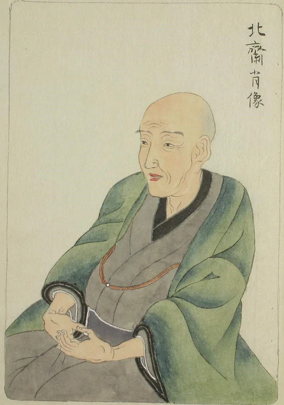

Completed around 1831, Under the Wave off Kanagawa is among the most recognized works of art in human history. Hokusai captured the moment a towering ocean surge dwarfs the distant silhouette of Mount Fuji — a collision of the ephemeral and the eternal, the terrifying and the sublime.
Hokusai positioned the wave to create a dynamic diagonal thrust across the picture plane. The curl of the foam forms a natural frame — the eye spirals inward toward the tiny boats and, ultimately, toward Fuji. Nothing is by accident.
The print's distinctive blue — Berorin-ai, or Berlin blue — was a newly imported synthetic pigment. It was more vivid, stable, and water-resistant than traditional Japanese pigments. Hokusai embraced it immediately, using it to build luminous oceanic depth.
Mount Fuji appears small, distant, serene — yet immovable. The wave threatens, the boats strain, but Fuji simply endures. It is the constant against which all impermanence is measured. A meditation on human fragility beneath natural forces.
From Debussy's La Mer to Monet's water lily series, from Art Nouveau posters to the Japanese Yen — the wave's visual DNA infiltrated every corner of global culture. It is perhaps the first truly viral image.

Born into an artisan family in Edo — modern Tokyo — Hokusai apprenticed himself to a mirror-polisher, a woodblock cutter, and a lending library before entering the studio of painter Katsukawa Shunshō at eighteen. Over nine decades he worked under thirty different pseudonyms, produced over thirty thousand artworks, and changed his name upon nearly every creative breakthrough — treating identity itself as a mutable artistic medium.